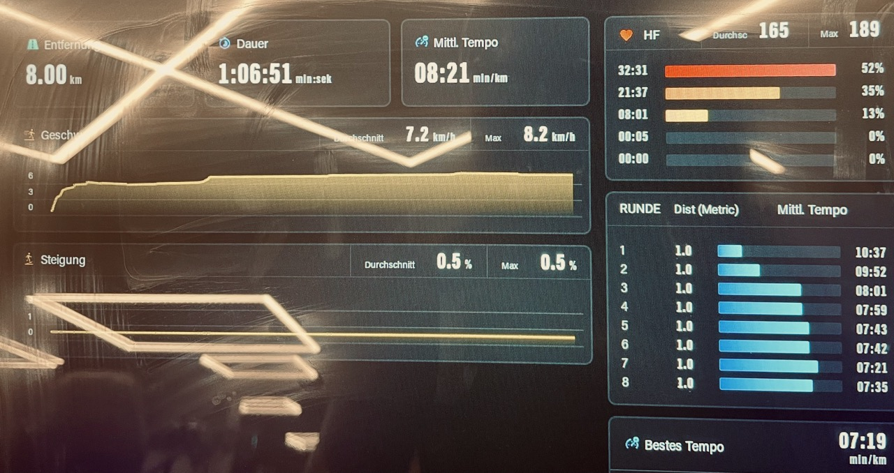

2025/05/17
The app plan had an 8 km long run with an increasing pace every 2km. Since I wanted to try the treadmill, I decided to go to the gym.
Yesterday, I did an easy run with my wife to keep her company. We completed 3k at a 10:18 pace (3 min run, 1 min walk). I assumed it would be more like a warm-up for me, but I'm not so sure now.
This morning, I did a home workout with my online personal trainer. It was leg day. My daughter joined me, too, so it was fun, but I went all out. It was also the first time my soon-to-be-four-year-old daughter did a full workout with me.
My legs were sore, and I had to muster all my willpower to get to the gym. I reached there around 8 p.m. because I wanted to put as much buffer between my workout and my run as possible.
Running on a treadmill felt weird at first. I'm so used to running outside that I couldn't judge my pace without the visual cue of things passing by. Next time, I'll try the treadmill's scenic mode.
It was more accurate because I was able to simply program the exact pace I wanted to run at. Starting slow and then increasing the pace is hard because after 4km, I was already tired. I had to push myself a lot, especially for the last 1 km. The music helped.

I also ran in my gym shoes instead of my usual running shoes, but it wasn't a problem. They were comfy enough.
I was exhausted by the end of the run. I did a cooldown walk and some stretches. I was drenched in sweat, but I felt good.
My plan is to do a 5k easy run tomorrow, but I'm not sure if I should do it. My legs are sore, and I don't want to overdo it.